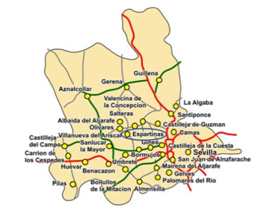
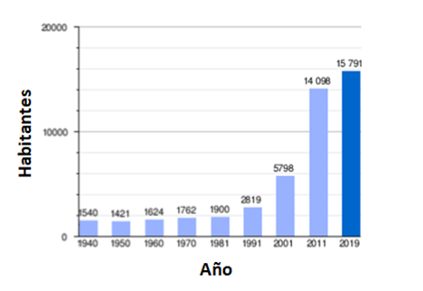
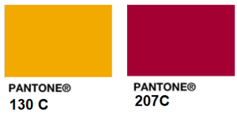
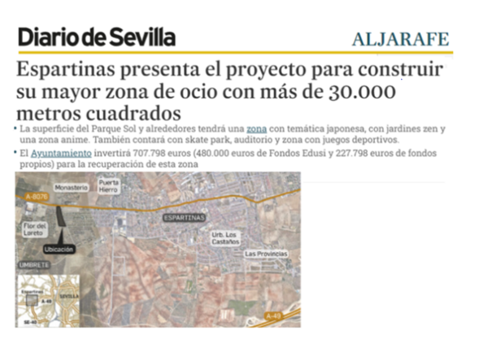

El Aljarafe es una comarca situada en la provincia de Sevilla, en Andalucía. Los 30 municipios que la componen juntan más de 390.000 habitantes, conformando la mayor aglomeración urbana del sur del país, el Área metropolitana de Sevilla
El extremo sur de la comarca se encuentra a apenas 7 km del océano Atlántico por el sur y a 112 km del estrecho de Gibraltar. El río Guadalquivir la separa de la capital andaluza, a solo 2 km por Autovía del Quinto Centenario.
Para la legislación autonómica, los siguientes municipios, ubicados en el Aljarafe, forman parte del área metropolitana de Sevilla: Albaida del Aljarafe, Almensilla, …,Espartinas, Umbrete, … y Villanueva del Ariscal.

Pese a conservar una parte importante del paisaje tradicional de olivares y otros aprovechamientos agrícolas, hoy cumple una función metropolitana y residencial que ha trasformado considerablemente su imagen. Podría considerarse como una "ciudad chalet” por el predominio de este tipo de edificaciones de baja densidad, tan propio de los crecimientos suburbanos contemporáneos. El crecimiento poblacional ha hecho que gran parte de los municipios formen un espacio urbano contiguo, en el que los límites entre un municipio se difuminan.
La diferencia de altura con respecta a Sevilla capital hace de esta zona, una de las más cómodas para vivir en los meses calurosos de verano por la diferencia de temperatura que existe con respecto a Sevilla. Estas condiciones climáticas tan favorables han sido un factor importante del crecimiento de la comarca.
El Aljarafe cuenta con dotaciones propias, como hospitales (San Juan de Dios, el hospital Vithas Sevilla), una universidad privada (CEU Andalucía), estudios de televisión, hoteles, un puerto deportivo (Puerto Gelves) y centros comerciales y grandes superficies como Ikea, Makro, Carrefour, El Corte Inglés, etc., así como numerosos centros educativos.
Según un estudio de la Agencia Tributaria publicado en 2018, ocho de los diez municipios con mayor renta declarada de toda Andalucía se encuentran en el Aljarafe, a la cabeza de los cuales se encuentran Tomares y Espartinas.
Espartinas es un municipio de la provincia de Sevilla, en la comarca del Aljarafe. Su extensión superficial es de 22,7 km² y se encuentra a 13 kilómetros de Sevilla.
Su población, como la del Aljarafe, ha venido creciendo en los últimos años.
 Flor del Loreto es una urbanización muy tranquila compuesta por 65 casas de estilo sevillano donde el rojo carmesí y el amarillo albero se combinan en los edificios con frecuencia ya que forman parte indiscutible de la paleta de colores sevillana y es por ello que existe una fuerte ligazón entre estos colores y la identidad hispalense.
Es una población y una urbanización que no paran de mejorar. Recientemente Espartinas ha presentado un proyecto para construir su mayor zona de ocio con más de 30.000 metros cuadrados en las proximidades de la Urbanización Flor del Loreto (diario de Sevilla, abc de Sevilla).
Por lo que se refiere a servicios, existe una amplia gama de servicios de transporte (gasolineras, tren/metro), sanidad (farmacias, clínicas, hospitales), educación (colegios, universidades, escuelas, bibliotecas), mercados, comercios y centros comerciales para hacer la compra.
NOTA: Última actualización 5 de junio de 2022.